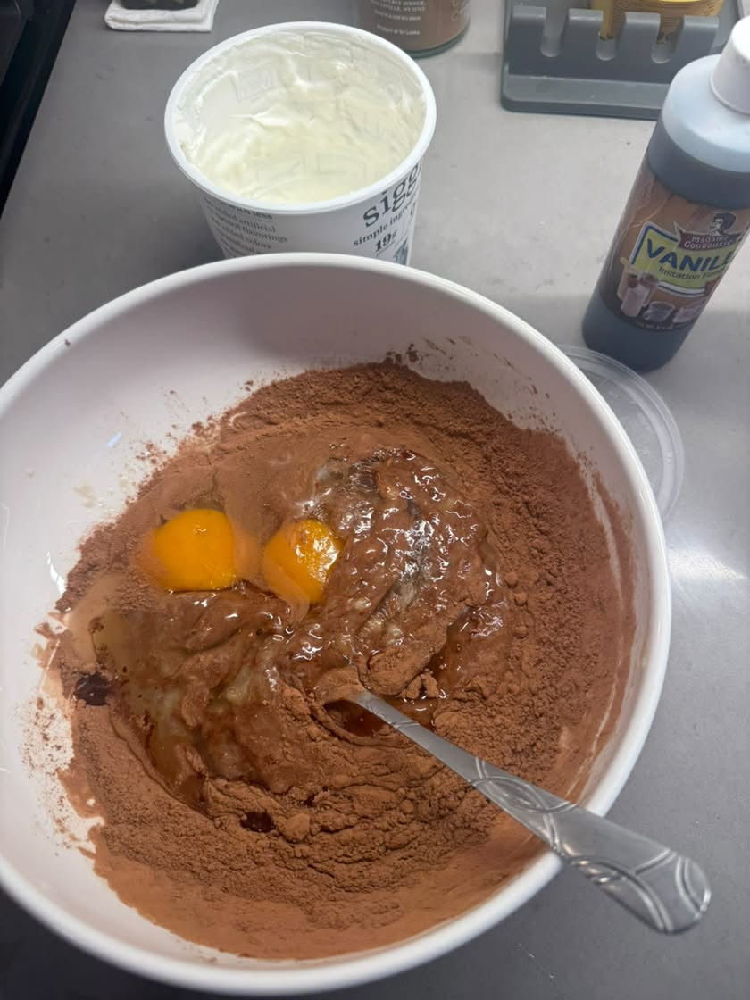
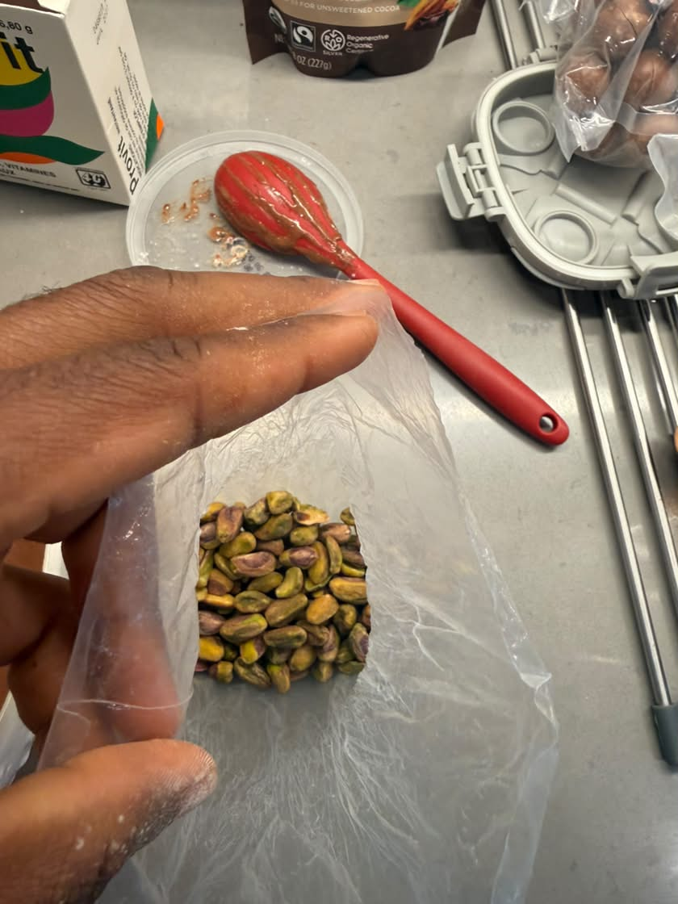
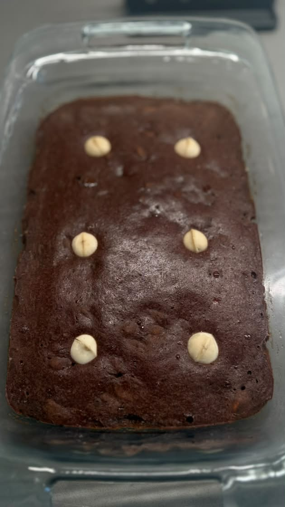

Ingredients
- 2 very ripe bananas
- 2 large eggs
- 1/2 cup Siggi's 0% Greek yogurt
- 1/3 cup Navitas Organic Cacao Powder
- 1 tsp vanilla extract
- 2 tbsp melted butter
- Pinch of Himalayan pink salt
- Toppings: raw pistachios + macadamia nuts

Mash bananas until smooth. Add eggs, yogurt, vanilla, and melted butter. Mix well, then add cacao powder and salt.

Chop pistachios and prepare macadamia nuts for topping.


Pour into pan, bake 350°F for 45 min. Cool 10 min before slicing.

All photos and video are my own original personal photos taken in my kitchen in Seattle. I own full rights.